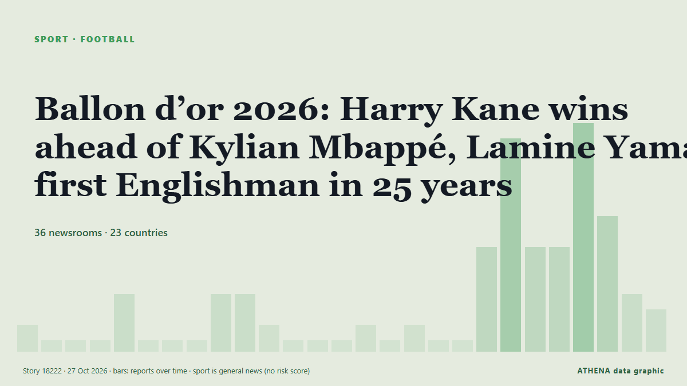

Ballon d’or 2026: Harry Kane wins ahead of Kylian Mbappé, Lamine Yamal; first Englishman in 25 years

The 2026 Ballon d'Or winner will be announced on Monday night at a glittering ceremony in London. de The National
Informado de forma independiente por 36 medios de 23 países desde el 21 oct; el primero fue The National; la cobertura ya se ha calmado. Deportes y cultura se archivan sin evaluación de riesgo. La confianza es del 91 % (alta): lo corroboran 36 medios independientes, con una fiabilidad media de las fuentes del 74 %. Quién lo informó: 9 medios en Reino Unido · United Kingdom, 8 medios en Nigeria, 5 medios en Emiratos Árabes Unidos · United Arab Emirates. La cobertura fue de 21 oct a 26 oct, durante 135 horas.
Qué ha cambiado: 27 informaciones nuevas de 19 redacciones en las 24 horas hasta el 27 oct.
Primer titular: Kane primed to pip Yamal, Mbappe to Ballon d'Or glory
Los titulares se muestran en inglés, tal como se publicaron.
De un vistazo
Seleccionado, puntuado y redactado por la metodología publicada de ATHENA. Ningún editor interviene en eventos concretos. Cómo se elabora ›
| 21 Oct 04:30 UTC | 1 |
|---|---|
| 21 Oct 10:30 UTC | 0 |
| 21 Oct 16:30 UTC | 0 |
| 21 Oct 22:30 UTC | 0 |
| 22 Oct 04:30 UTC | 3 |
| 22 Oct 10:30 UTC | 0 |
| 22 Oct 16:30 UTC | 0 |
| 22 Oct 22:30 UTC | 0 |
| 23 Oct 04:30 UTC | 3 |
| 23 Oct 10:30 UTC | 3 |
| 23 Oct 16:30 UTC | 1 |
| 23 Oct 22:30 UTC | 0 |
| 24 Oct 04:30 UTC | 0 |
| 24 Oct 10:30 UTC | 0 |
| 24 Oct 16:30 UTC | 1 |
| 24 Oct 22:30 UTC | 0 |
| 25 Oct 04:30 UTC | 1 |
| 25 Oct 10:30 UTC | 0 |
| 25 Oct 16:30 UTC | 0 |
| 25 Oct 22:30 UTC | 6 |
| 26 Oct 04:30 UTC | 13 |
| 26 Oct 10:30 UTC | 6 |
| 26 Oct 16:30 UTC | 6 |
| 26 Oct 22:30 UTC | 14 |
| 27 Oct 04:30 UTC | 8 |
| 27 Oct 10:30 UTC | 3 |
| 27 Oct 16:30 UTC | 2 |
Por qué estas cifras
Importancia
Riesgo
Confianza
La cobertura: quién informó y cuándo
titular tal como se publicó · abre el original- The National · Emiratos Árabes Unidos · United Arab EmiratesBallon d’Or 2026: Nominees, favourites, ceremony date and how to watch
- The National · Emiratos Árabes Unidos · United Arab EmiratesBallon d'Or 2026 predictions: Who will be crowned the world's best footballer?
- DW English · Alemania · GermanyHarry Kane: Ballon d’Or for Bayern Munich striker
- Punch · NigeriaRice backs Kane to win 2026 Ballon d’Or
- Asharq Al-Awsat (English) · Arabia Saudí · Saudi ArabiaComplete Kane Hopes for 'Special Night' as Ballon d'Or Rumors Swirl
- Al Jazeera English · Catar · QatarHarry Kane hopes Ballon d’Or produces ‘special night’ in hometown
- Punch · NigeriaMy wife eager to know Ballon d’Or result, says Kane
- Vanguard · NigeriaBallon d’Or 2026: Yamal charters private jet for London ceremony
- Arab News · Arabia Saudí · Saudi ArabiaYamal and Mbappé face off in clasico one day before Ballon d’Or winner is revealed
- IOL · Sudáfrica · South AfricaHarry Kane eyes 'special night' as favourite for Ballon d'Or in London home
- The Rio Times · Brasil · BrazilEcuador Defender Eyes Ballon D’Or on 26 Oct
- The National · Emiratos Árabes Unidos · United Arab EmiratesBallon d’Or 2026: The five most historic winners – from Matthews to Messi
- Evening Standard (London) · Reino Unido · United KingdomBallon d'Or odds: Kane remains odds-on to claim top prize despite Mbappe betting surge
- Punch · NigeriaNigerians missing as 2026 Ballon d’Or winner emerges today
- Oman Observer · Omán · OmanKane primed to pip Yamal, Mbappe to Ballon d'Or glory
- Express Tribune · Pakistán · PakistanKane favourite for Ballon d'Or
- Vanguard · NigeriaKane primed to beat Yamal, Mbappe to Ballon d’Or glory
- Al Jazeera English · Catar · QatarBallon d’Or 2026 predictions: Yamal, Mbappe and Kane – who will win?
- France 24 English · Francia · FranceMbappé, Kane and Yamal top favourites list in wide open 2026 Ballon d’Or race
- IOL · Sudáfrica · South AfricaKane primed to pip Yamal, Mbappe to Ballon d'Or glory
- Türkiye Today · Turquía · TurkeyHarry Kane leads Ballon d'Or race as Yamal, Mbappe challenge for 2026 award
- Korea Herald · Corea del Sur · South KoreaKane favored over Yamal, Mbappe for Ballon d'Or
- Vanguard · NigeriaKane primed to pip Yamal, Mbappe to Ballon d’Or glory
- MyJoyOnline · GhanaJoy Sports journalists make Ballon d’Or 2026 predictions
- Asharq Al-Awsat (English) · Arabia Saudí · Saudi ArabiaKane Primed to Pip Yamal, Mbappe to Ballon d'Or Glory
- Evening Standard (London) · Reino Unido · United KingdomWho will win 2026 Ballon d'Or? Latest odds as Harry Kane faces late Kylian Mbappe surge
- Gulf News · Emiratos Árabes Unidos · United Arab EmiratesKylian Mbappe vs Harry Kane vs Lamine Yamal stats comparison: Who has the better numbers for Ballon d'Or 2026?
- Gulf News · Emiratos Árabes Unidos · United Arab EmiratesBallon d'Or 2026: When, where to watch, timings, favourites and how voting works
- Sky News (World) · Reino Unido · United KingdomWill Harry Kane win tonight's Ballon d'Or?
- RFI English · Francia · FranceMbappé, Yamal or Kane? Ballon d’Or verdict due in London
- Evening Standard (London) · Reino Unido · United KingdomBayern 'work to remove Tottenham clause' in Harry Kane contract ahead of Ballon d'Or
- The Scotsman · Reino Unido · United KingdomBallon d'Or 2026 Odds: Who is favourite to win the award? Latest odds on Harry Kane, Kylian Mbappe, Lamine Yamal
- Times of India · IndiaBallon d'Or: Messi, Yamal and Mbappe among favourites; how the winners are decided
- Evening Standard (London) · Reino Unido · United KingdomBallon d'Or 2026 LIVE: Latest updates and results as Harry Kane beats Kylian Mbappe in London
- Channels TV · NigeriaKane Tipped To Beat Yamal, Mbappe To Ballon d’Or Glory
- Punch · NigeriaMbappé, Yamal, Kane, Olise battle for Ballon d’Or in London
- Sky News (World) · Reino Unido · United KingdomHarry Kane ends England's 25-year wait to win men's Ballon d'Or
- WalesOnline · Reino Unido · United KingdomHow to watch Ballon d'Or 2026 ceremony for free - start time and live stream
- Evening Standard (London) · Reino Unido · United Kingdom'Harry Kane wins 2026 Ballon d'Or': Final result 'leaked' as rankings are announced
- Nile Post · UgandaKane prematurely announced as Ballon d'Or winner